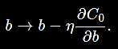
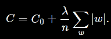

Overfitting
Overfitting is a phenomenon which occurs often when dealing with neural networks. So consider a scenario when the cost of your model keeps dropping consistently but accuracy of the model on the test set ceases to improve after sometime. Well, how can this happen? This is explained by overfitting.
Image 1 shows cost keeps getting decreased but Image 2 shows, accuracy failing to improve after about 280th epoch. This is beacause cost suggests model's effictiveness on the training data, i.e. how good model is able to classify the training data. Model keeps getting better at classifying the images in the training data even after the 280th epoch but fails to generalize it's effectiveness after 280th epoch on the test set. That's why the accuracy ceases to improve.
Neural Networks are powerful algorithms. What happens is that model generates complex decision boundaries to classify the training data. The complex decision boundaries classifies the training data extremely well but they generalize poorly. We can understand this as, our model memorizing the data rather than learning from it. This is not what we desire. What we want is to our model to generalize well on previously unseen examples i.e. the test data.
Overfitting is a major problem in neural networks. This is especially true in modern networks, which often have very large numbers of weights and biases. To train effectively, we need a way of detecting when overfitting is going on, so we don't overtrain. And we'd like to have techniques for reducing the effects of overfitting.
The obvious way to detect overfitting is to keep track of accuracy on the test data as our network trains. If we see that the accuracy on the test data is no longer improving, then we should stop training. Of course, strictly speaking, this is not necessarily a sign of overfitting. It might be that accuracy on the test data and the training data both stop improving at the same time. Still, adopting this strategy will prevent overfitting.
Another important thing to keep in mind is to split our data into three parts, training_data, validation_data and the test_data. And we use validation_data for all the hypermeter testing and everything. test_data will only be used once after everything is done, and we wish to see how good our model will perform on totally unseen new inputs. To read about this in detail, I suggest you read my blog post.
One super effective strategy to reduce overfitting can be, feeding more data to the algorithm. When we use large training sets, overfitting becomes really minimal. But generating more data can be expensive and is not even feasible always. In that case, we have some strategies which we use to help our cause. These methods are broadly reffered to as regularization. Let's read about them and their types in more detail.
Regularization
Apart from increasing the amount of training data, one other thing we can do is to reduce the size of the network. But as bigger networks tend to be more powerful, we won't really want to compromise with the size of the network. Fortunately, there are other techniques which can reduce overfitting, even when we have a fixed network and fixed training data. These are known as regularization techniques. First let's look at one of the most common of the regularizaton technique, L2 regularization or sometimes reffered to as weight decay technique.
L2 Regularization
The idea of the L2 regularization is to add an extra term to the cost function, a term called the regularization term. Here is the regularized cross entropy function.
The first term is just the usual expression for the cross-entropy. But we've added a second term, namely the sum of the squares of all the weights in the network. This is scaled by a factor , where λ > 0 is known as the regularization parameter, and n is, as usual, the size of our training set.
Similarly, it's possible to regularize the other cost functions too, like the MSE cost function.
In both cases, we can write the regularized cost function as
where, is the orignal, unregularized cost function.
Intuitively, the effect of regularization is to make it so that network prefers to learn small weights, all other things being equal. Regularization can be viewed as a way of compromising between finding small weights and minimizing the original cost function. The relative importance of the two elements of the compromise depends on the value of λ: when λ is small we prefer to minimize the original cost function, but when λ is large we prefer small weights.
Now, to apply SGD to the regularized cost function, let's first derivatives of regularized cost functions with respect to weights and biases.
These terms can be easily calculated using backpropagation. And hence, the update rule for the weights and biases in this case will be,

So now, let's look at the previous example again where we saw that model's accuracy on test set wasn't improving anymore. Let's do that again but this time, with L2 regularization.
As same as the last time, our model's cost continued to decrease over the training set but the benefit of introducing regularization can be seen as the accuracy on the test set didn't cease like the last time.
It seems that, empirically, regularization is causing our network to generalize better, and considerably reducing the effects of overfitting.
Note, when doing unregularized runs, they will often get stuck in the local minima of the cost function. Why is this going on? Heuristically, if the cost function is unregularized, then the length of the weight vector is likely to grow, all other things being equal. Over time this can lead to the weight vector being very large indeed. This can cause the weight vector to get stuck pointing in more or less the same direction, since changes due to gradient descent only make tiny changes to the direction, when the length is long. I believe this phenomenon is making it hard for our learning algorithm to properly explore the weight space, and consequently harder to find good minima of the cost function.
Why does regularization help reduce overfitting?
Let's suppose we wish to fit a model to this below dataset.
Well there can be many possible fits to this dataset. Let me show you two of those.
Well one of the fit is a 9th order polynomial and another one is of a linear model. Now the question arises, which one is better?
Well the model which generalizes better on the unseen examples better is a better model. Both of the models are fitting all the points in the training set anyway.
Imagine a case in which we have to do prediction about an input which is much larger than the scope of the given graphs, which model we'll be more tempted to believe? Ofcourse, the linear model.
Suppose our network mostly has small weights, as will tend to happen in a regularized network. The smallness of the weights means that the behaviour of the network won't change too much if we change a few random inputs here and there. That makes it difficult for a regularized network to learn the effects of local noise in the data. Think of it as a way of making it so single pieces of evidence don't matter too much to the output of the network. Instead, a regularized network learns to respond to types of evidence which are seen often across the training set. By contrast, a network with large weights may change its behaviour quite a bit in response to small changes in the input. And so an unregularized network can use large weights to learn a complex model that carries a lot of information about the noise in the training data. In a nutshell, regularized networks are constrained to build relatively simple models based on patterns seen often in the training data, and are resistant to learning peculiarities of the noise in the training data. The hope is that this will force our networks to do real learning about the phenomenon at hand, and to generalize better from what they learn.
Note, one important thing to keep in mind is that we don't usually constrain the bias when doing regularization.
L1 Regularization
In this approach we modify the unregularized cost function by adding the sum of the absolute values of the weights:

This looks pretty similar to L2 Regularization, penalizing large weights and making our network prefer small weights. Of course, the L1 regularization term isn't the same as the L2 regularization term, and so we shouldn't expect to get exactly the same behaviour. Let's try to understand how the behaviour of a network trained using L1 regularization differs from a network trained using L2 regularization.
To do that, we'll look at the partial derivatives of the cost function.
where sgn(w) is the sign of w, that is, +1 if w is positive, and −1 if w is negative. The resulting update rule for an L1 regularized network is,

In both expressions the effect of regularization is to shrink the weights. This accords with our intuition that both kinds of regularization penalize large weights. But the way the weights shrink is different. In L1 regularization, the weights shrink by a constant amount toward 0. In L2 regularization, the weights shrink by an amount which is proportional to w. And so when a particular weight has a large magnitude, |w|, L1 regularization shrinks the weight much less than L2 regularization does. By contrast, when |w| is small, L1 regularization shrinks the weight much more than L2 regularization. The net result is that L1 regularization tends to concentrate the weight of the network in a relatively small number of high-importance connections, while the other weights are driven toward zero.
Dropout
Dropout is a pretty different regularization strategy from L1 and L2 regularization. Unlike L1 and L2, dropout doesn't alters the cost function but instead alters the network architecture itself. Let's see how dropout works. Suppose we are trying to train a network,
In particular, suppose we have a training input x and a corresponding output y. Ordinarily, we'll forward propagate x through the network and then backpropagte to determine the contribution to the gradient. With dropout, this process is modified. We start by randomly (and temporarily) deleting half the hidden neurons in the network, while leaving the input and output neurons untouched. After doing this, we'll end up with a network along the following lines. Note that the dropout neurons, i.e., the neurons which have been temporarily deleted, are still ghosted in:
We forward-propagate the input x through the modified network and then backpropagate the result, also through the modified network. After doing this over a mini-batch of examples, we update the weights and the biases. We then repeat the process, first restoring the dropout neurons, then choosing a new random subset of hidden neurons to delete, estimating the gradient for a different mini-batch, and updating the weights and biases in the network.
By repeating this process over and over, our network will learn a set of weights and biases. Of course, those weights and biases will have been learnt under conditions in which half the hidden neurons were dropped out.
This dropout procedure may seem strange. To explain what's going on, I'd like you to briefly stop thinking about dropout, and instead imagine training neural networks in the standard way (no dropout). In particular, imagine we train several different neural networks, all using the same training data. Of course, the networks may not start out identical, and as a result after training they may sometimes give different results. When that happens we could use some kind of averaging or voting scheme to decide which output to accept. For instance, if we have trained five networks, and three of them are classifying a digit as a "3", then it probably really is a "3". The other two networks are probably just making a mistake. This kind of averaging scheme is often found to be a powerful (though expensive) way of reducing overfitting. The reason is that the different networks may overfit in different ways, and averaging may help eliminate that kind of overfitting.
What's this got to do with dropout? Heuristically, when we dropout different sets of neurons, it's rather like we're training different neural networks. And so the dropout procedure is like averaging the effects of a very large number of different networks. The different networks will overfit in different ways, and so, hopefully, the net effect of dropout will be to reduce overfitting.
Artificial Training Data
We have earlier seen that having more training data helps to counter overfitting. Obtaining more training data is a great idea. Unfortunately, it can be expensive, and so is not always possible in practice. However, there's another idea which can work nearly as well, and that's to artificially expand the training data. Suppose, for example, that we take an MNIST training image of a five,